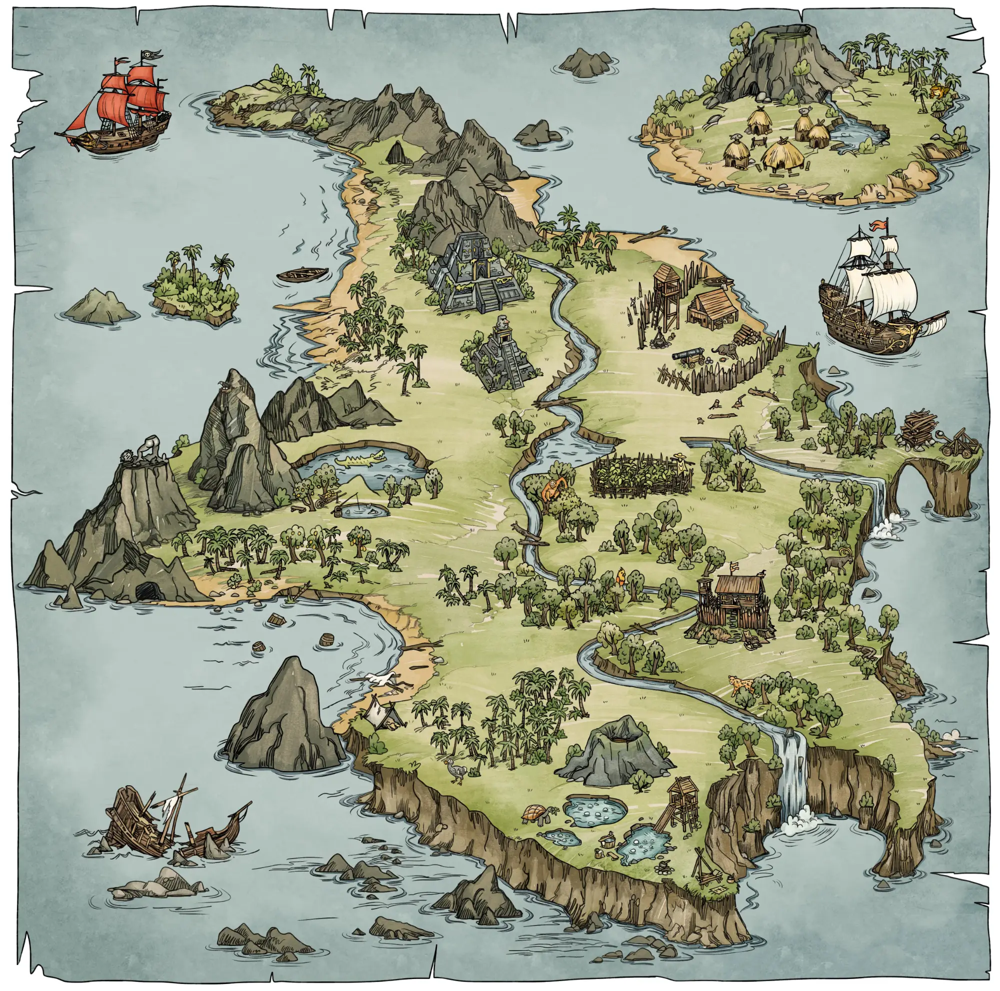

СНЕГ · Седые горы
ДЖУНГЛИ с кристаллами · Храм
Джунгли (пальмы)
Пальмовая роща (джунгли)
СКАЛЫ и РУИНЫ · Западный холм
ЛУГ и ЗОЛОТАЯ РОЩА (база)
ГОРЯЧИЕ КЛЮЧИ · сухой луг, вулкан
ФОРТ Ордена (лагерь)
ДЕРЕВНЯ (мирная)
Б1 · мост к деревне
Б2 · к катапульте
Б3 · к островку
Б4 · на скалу
М1 каменный мостик
М2 брод
М3 мостик
М4 мостик
S
СТАРТ · лагерь у палатки
$
кузнец, торговец,
источник здоровья
$
Хижина на сваях: торговец
☀
Соллер у статуи (одиночка)
1
малинёныши ×4, слизни ×2
2
кабанчики ×2, жуки ×2
3
вышка: лучники ×2
4
лагерь: сборщики ×3, садовники ×3
5
волки ×3 (леопард)
6
лозоплёты ×2, улей
7
Терновый сад: лозы ×3, бутоны ×2,
терновое чудище; пугало у грядок
8
рыцари: щитоносцы ×2, оруженосцы ×3,
копейщики ×2, арбалетчики ×2 на вышке,
знаменосец; в глубине молотобоец
9
маги ×2, целительница, призыватель;
обелиск + големчики ×2; мимики ×2
★
БОСС на пирамиде: Друзовый голем
10
пруд: слизни ×3, бутоны ×2
11
пещера: огоньки ×3, котелки ×2,
бочонки ×3; сундук (по желанию)
12
бочонки ×3, мимик; сундук
13
островок: мимик, сундук
14
скала: клубки ×2, сундук
!
З1 жуки ×2 из-под дороги
!
З2 лозоплёт плетёт сеть на дороге,
с деревьев — малинёныши ×4
!
З3 у ворот: клубки ×2 катятся по дороге,
арбалетчики бьют с вышки
!
З4 огоньки ×3 сквозь стены руин,
бочонки ×2 катятся под горку
!
З5 кабанчик тараном вдоль тропы
!
З6 котелок прыгает со скалы
!
З7 бутоны ×2 с берегов
П
П1 садовники ×2 по дороге
П
П2 копейщик + оруженосцы ×2
(Орден, хутор ↔ форт)
П
П3 щитоносец + арбалетчик
П
П4 слизни ×3
П
П5 волки ×3 бродят по роще
грот: сундук + мимик
сундук босса
Карта 1 — план (256 × 256 м)
старт, торговцы, безопасно
группа врагов (номер — порядок пути)
босс карты
Соллер, Рыцарь Солнца
Б — мост между островами
М — мостик или брод через реку
дорога (земляная / плиты)
З — засада на дороге
П — патруль, ходит по дороге
сундук (волшебный)
ящики и бочки (ломать / взрывать)
1 м ≈ 7,5 px картинки
регион стриминга 32 × 32 м